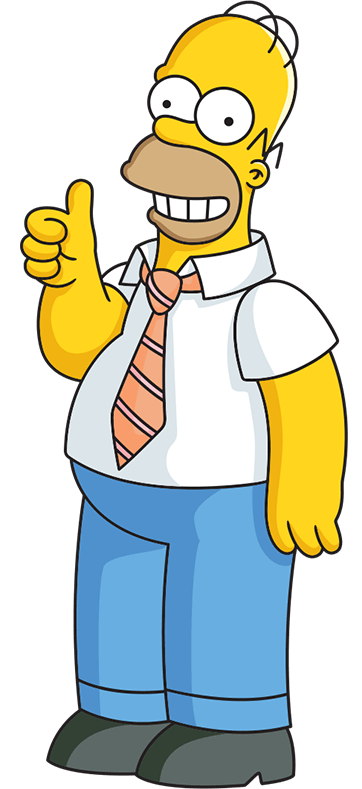
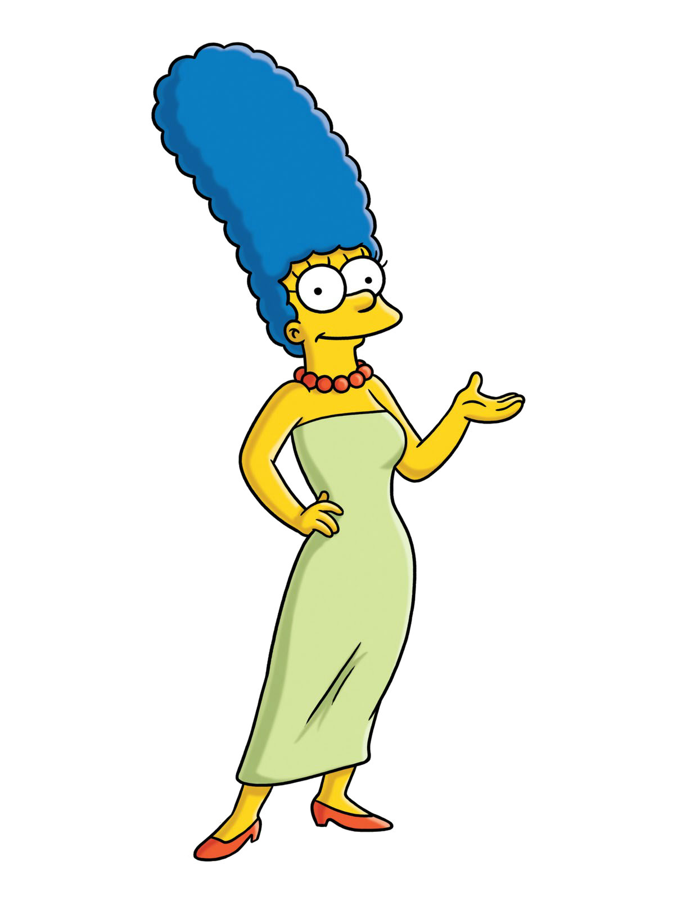
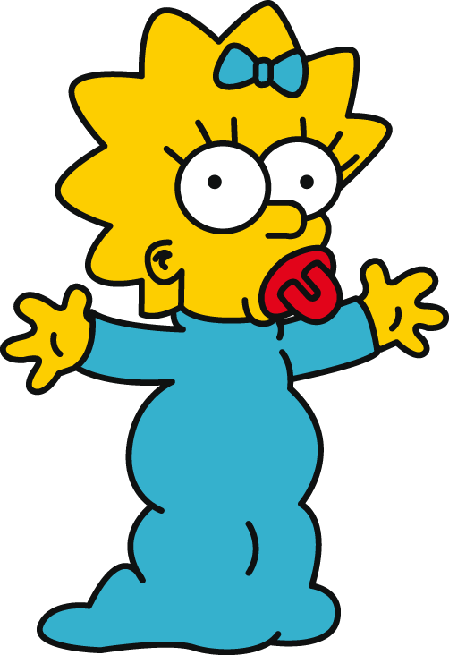

주요 등장 인물

호머 심슨
(Homer Simpson)
풀네임은 호머 제이 심슨(Homer Jay Simpson), 부인인 마지 심슨이 부르는 애칭은 호미(Homie). 바트, 리사, 매기의 아버지. 도넛, 더프 맥주, 텔레비전을 좋아하는 살찐 중년 남성이다(36~39). 신장 182cm. 체중 약 255파운드(115Kg - 추정). 스프링필드 원자력 발전소 7G구역 안전 책임자로 일하고 있으나 하루종일 잠을 자거나, 수시로 결근, 지각, 조퇴를 하는 등 성실하게 근무하지 않고 심지어 원자로를 녹이거나 불을 내는 등 발전소에 많은 손해를 입히기도 한다. 이외에 시장, 컨트리 가수 매니저, 전위 예술가, 발명가, 중창단 '비샵스'(비틀즈를 패러디한 것이다.) 가수, 락밴드 보컬, 제설차량 운행, 견인차 운행, 프로 복서, 패스트푸드점 아르바이트, 아이스크림 장수, 볼링장 직원, 미니골프장 아르바이트, 퇴비 장사, 폐유 사업, 경찰서장,핵 무기 공장 간부, 핵 발전소 이사, 원자력 발전소 인도 지사 사장, 자동차 디자인 팀장, 광대, 성악가, 목사, 파파라치, 주점 운영, 원자력 발전소 노동조합 위원장, 애니메이션 성우, 음식 평론가, 농부, 야구팀 마스코트, 약장수 등의 직업을 가진 바 있다. 필요없는 말을 하지 않거나 이름을 바꾸면 상류사회와 교류할 수 있었으며, 머리카락이 있었다면 회사의 중역으로 발탁될 수 있었다. 몇 개의 그래미상을 수상한바 있으며 이를 매우 하찮게 여긴다. 우주에 다녀온적이 있다. 모의 가게에서 레니, 칼, 바니 등과 맥주를 즐겨마신다. 바트에게 화가 나면 목을 조르며 「이 조그만 자식이!」(Why you little!)이라고 화를 낸다.
마지 심슨
(Marge Simpson)
풀 네임은 마조리 부비에 심슨(Marjorie Jacqueline Simpson). 나이는 34 . 바트, 리사, 매기의 어머니. 위로 길쭉한 머리 모양과 허스키한 목소리가 특징이다. 비교적 상식적인 사람이지만, 가끔 도박이나 음주에 빠지기도 한다. 어렸을 때는 발레리나가 되고 싶어 했다. 학창시절 12년 내내 좋은 성적을 유지하던 우등생이었다가 졸업 즈음 호머를 만나 사랑에 빠지며 성적이 급감했다. 결국 평범한 전업주부가 된다. 말썽을 일으키는 가족 구성원들(주로 호머와 바트)을 통제하는 역할을 한다. 주로 자신이 마음에 안드는 일이 있을 때, 「음….」을 자주 말한다. 어릴 적에 아버지인 클랜시가 실직하여 여객기 승무원으로 일하는 것을 목격하자 그 정신적 충격으로 비행기 공포증이 있었지만, 정신과 상담을 받은 이후로는 없어졌다. 세 아이의 엄마지만 좋은 몸매를 유지하고 있다. 한 에피소드 내용중에는 호머와 결혼하지 않았다면 미국 최초의 여성 대통령이 될 수도 있었다는 내용도 있다. 그는 여러 직업을 가졌는데 경찰, 부동산업자, 상담원, 응급조치 강의, 사업가 , 공무원, 암살자, 도박사, 애로틱 제빵사, 주방용품 모델, 소설가, 프레즐 상인 등이 있다.할로윈 특집에선 이중 암살자나 마녀로 나오기도 했다.


바트 심슨
(Bart Simpson)
풀 네임은 바톨로뮤 조조 심슨(Bartholomew Jojo Simpson). 광대 크러스티를 광적으로 좋아하는 10살 소년이다. 장난이 매우 심하며 퇴학당할 뻔한적도 있다 혈액형은 Rh- O형이고, 심슨 가족 중 유일한 왼손잡이이다. 공부를 못하고, 장난치는 것을 좋아한다. 스케이트 보드 타는 기술은 천재적이다. 스프링필드 초등학교 교장 시모어 스키너와는 항상 천적이다. 놀라운 일이 있을 때 「아이, 카람바!」(Ay, caramba! 스페인어로서 영어의 Oh, my god!과 같다)라고 하고, 뭔가를 저지르기 전에는 항상 「카와붕가!」(Cow-A-Bunga!: 자, 간다 서핑하는 사람들이 파도에 오를때 외침)을 외친다. 또 다른사람과 통성명을 할때는 종종「난 바트 심슨인데 댁은 누구쇼?」 (I'm Bart Simpson and Who the hell are you?) 라고 한다. 방송 출연시의 유행어는 「제가 안했어요.」(I didn't do it.)이다. 크러스티의 누명을 벗겨주었다. 셀마를 사이드쇼 밥으로부터 구했다. 사이드쇼 밥의 범죄를 고발하여 그를 감옥에 보내게 한 이유로 사이드쇼 밥으로부터 살해 위협을 받는다.
리사 심슨
(Lisa Simpson)
풀 네임은 리사 메리 심슨(Lisa Marie Simpson). 심슨 가족의 큰 딸이며 8살이다. 상식적이고 영리하며, 가족들의 행동에 화를 내는 일이 자주 있다. 성적은 거의 대부분 A를 받는다. B를 받았을 때는 선생님에게 항의한 적도 있다. 반에서 머리도 가장 좋지만, 형편상 그의 부모가 사립학교 및 여타 더 좋은 학교의 존재를 숨기고 있다. 자신보다 똑똑한 학생이 등장하면 어떤 방법을 써서라든지 꺾어내려는 좋지 않은 면도 있다. 색소폰을 부는 것을 좋아하며 연주실력 또한 매우 뛰어나다. 기타 다른 악기에도 소질이 있어 보인다. 소원은 세계평화와 조랑말을 키우는 것이다. 똑똑하지만 사교성이 부족해서 친구가 없다. 환경주의자, 채식주의자이며 진보적 성향을 띠고 있다. 처음에는 기독교신자이지만, 호머의 실수로 파괴된후 상업 자본에 점거된 마을교회의 참상을 본 것을 계기로 불교신자가 된다. 학교에 가지 않으면 금단 현상을 보인다. 처음으로 이성적 매력을 느낀 상대는 불량학생인 넬슨 먼츠이다. 처음엔 그를 증오하지만 매력을 느끼고 그를 개선시키려 했으나 실패한다. 첫키스 상대 또한 그다. 어느날 멘사 회원이 되는데, 평소의 학교 성적이 멘사 협회에 보고되어 있어서 다른 회원들과는 달리 테스트를 거치지 않았다.


매기 심슨
(Maggie Simpson)
풀 네임은 마가렛 심슨(Margaret Simpson). 심슨 가족의 작은 딸로서 갓난아기이다. 아직 너무 어리기 때문에 말을 하지 못하지만 뛰어난 작전능력을 가졌다. 마지심슨을 닮아 힘이 장사급이다. '아빠(daddy)'라는 단 한 마디의 말을 한 적이 있는데, 혼자 있을 때한 말이라서 다른 가족들은 듣지 못했다. 매기가 어른이 된 미래 장면에서는 누군가에게 방해받아 말하는 것을 들을 수가 없다. 다만, 리사의 결혼식 축가를 부르려고 나왔을 때 헛기침을 하는데 기침소리는 바트의 목소리와 같았다. (본래 줄거리와 상관없는 할로윈 특집에서는 캉의 목소리를 낸 적이 있다.) 아기이지만 가끔은 놀라운 모습을 보여준다 (마피아를 제압하는 사격실력, 섹소폰 불기, 포커 등 ).